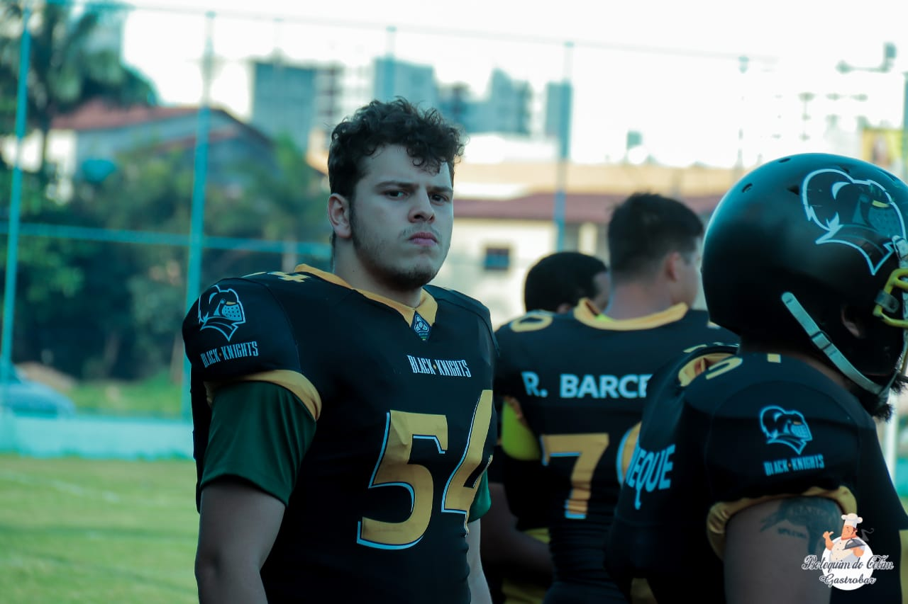
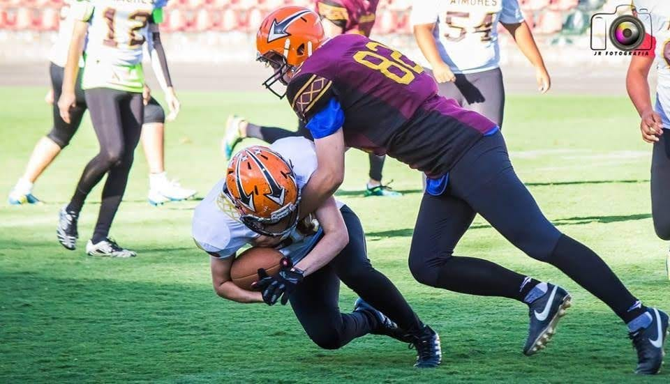
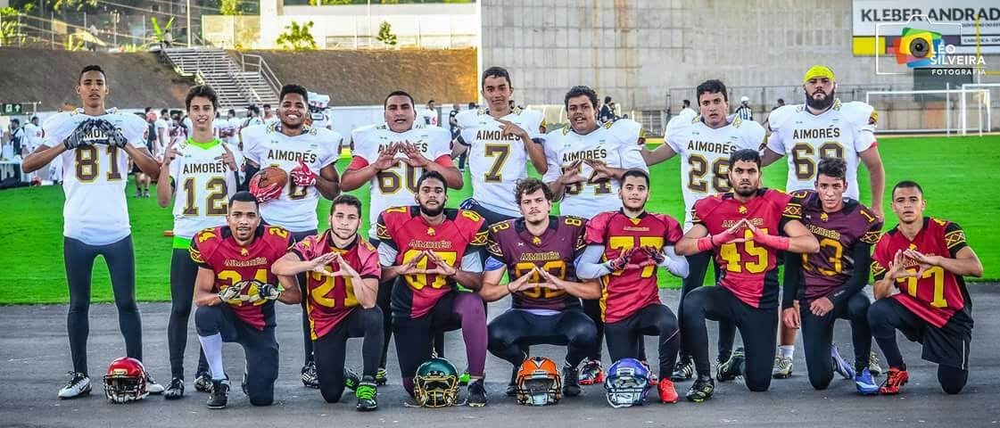

PERFIL
- Eduardo Di Giorgio Prudente.
- Carioca, nascido no dia 02/09/1999, atualmente com 20 anos e cursando Ciência da Computação na UVV.
- Estudei até o 9 ano em escolas particulares e fiz meu ensino médio na escola pública.
CURIOSIDADES
- Apaixonado por carros desde muito novo, sempre colecionei, li sobre, assisti programas, fazia pequenos projetos e sempre admirava quando passava um carro diferente na rua.
- Já fui jogador de futebol americano e já fui convocado para a seleção capixaba, joguei pelo (Vila Velha Aimorés, Vila Velha Tritões e Espírito Santo Black Knights).
- Sou viciado em vídeo game e adoro passar meus momentos livre jogando meus jogos favoritos, tanto com computadores quanto em consoles.
PROFISSIONAL
- Atualmente trabalho no Buffet Rico Gastronomia, em meu trabalho faço de tudo, copeiro, carregador, entregador, limpeza e etc.
- Penso que me formando na Ciência da Computação poderei juntar a programação e tudo que ela trás com minha paixão por carros, assim posso trabalhar no mundo automobilístico.
EXTRAS "JOGOS ZERADOS"
- Need For Speed Most Wanted (10x)
- Need For Speed Underground 2 (10x)
- GTA V (5x)
- GTA San Andreas (5x)
- Call of Duty Black Ops 2 (4x)
- Call of Duty World War (2x)
- Forza Horizon (2x)
- Until Dawn (1x)
- Watch Dogs (1x)
FOTOS
  